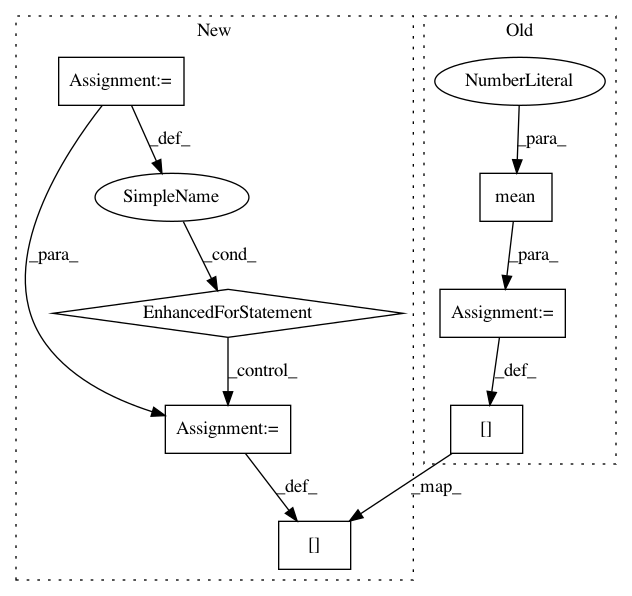

5bb62768d064583aef9efaf5b0838878e11f71e3,bambi/models.py,RandomTerm,_setup,#RandomTerm#,260
Before Change
self.prior = deepcopy(default_priors["random"])
// Rescale prior sd--need to implement better heuristic
mean_range = self.data.mean(0).max() - self.data.mean(0).min()
scl = max(mean_range, 1)
self.prior["sigma"]["args"]["beta"] *= (scl * 2 * self.model.y.data.std())
After Change
self.prior = deepcopy(default_priors["random"])
// Rescale prior sd--need to implement better heuristic
data = self.data
// nested terms are in dicts, so put non-nested terms in dummy dict
max_range = 0.
if not isinstance(data, dict):
data = {"dummy": data}
for level in data.values():
lev_range = level.mean(0).max() - level.mean(0).min()
if lev_range > max_range:
max_range = lev_range
scl = max(max_range, 1)
self.prior["sigma"]["args"]["beta"] *= (scl * 2 * self.model.y.data.std())
In pattern: SUPERPATTERN
Frequency: 3
Non-data size: 7
Instances
Project Name: bambinos/bambi
Commit Name: 5bb62768d064583aef9efaf5b0838878e11f71e3
Time: 2016-08-14
Author: tyarkoni@gmail.com
File Name: bambi/models.py
Class Name: RandomTerm
Method Name: _setup
Project Name: LxMLS/lxmls-toolkit
Commit Name: eabf2d7ea984e75cc898326317be8cc3b5e13183
Time: 2013-07-09
Author: ramon@astudillo.com
File Name: code/classifiers/gaussian_naive_bayes.py
Class Name: GaussianNaiveBayes
Method Name: train
Project Name: automl/auto-sklearn
Commit Name: 8bdcba15caa28cb4336d9cb6ee4108078ab6d8a2
Time: 2018-11-12
Author: feurerm@informatik.uni-freiburg.de
File Name: autosklearn/ensembles/ensemble_selection.py
Class Name: EnsembleSelection
Method Name: _fast